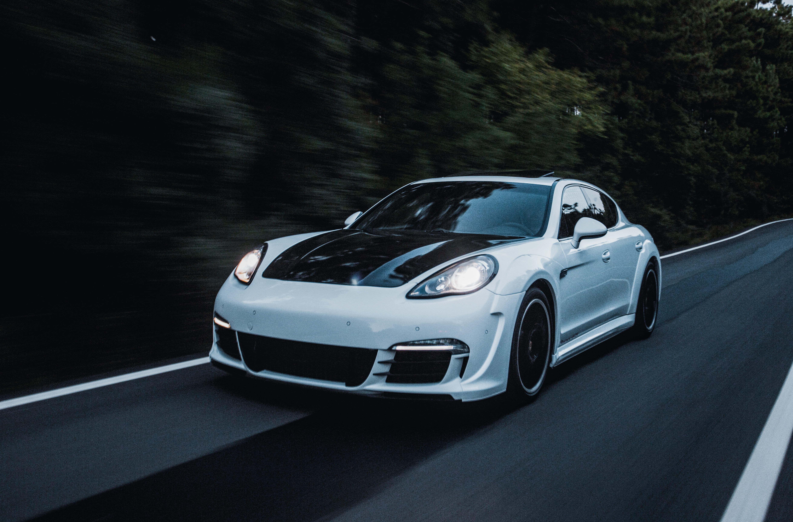
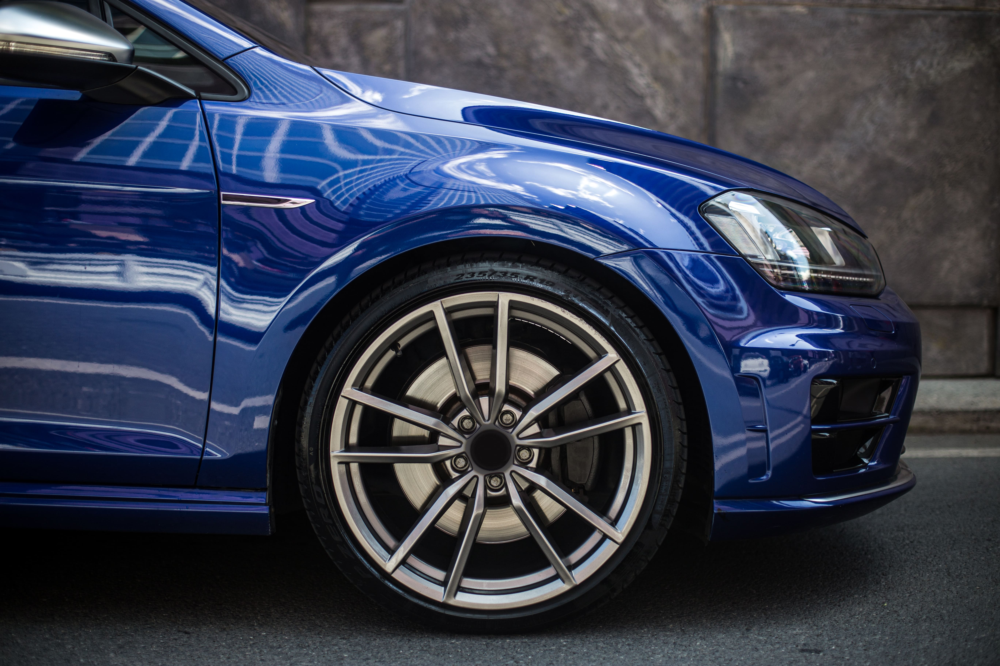
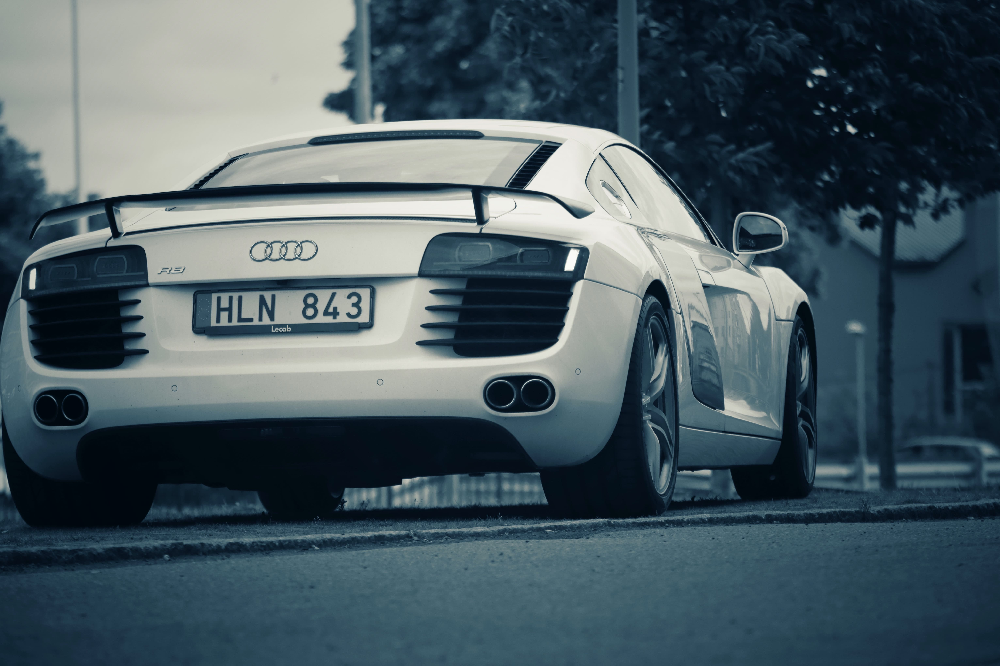

Amanecer entre ruinas
En una ciudad abandonada por el tiempo, los rayos del sol se cuelan entre los escombros para
recordarnos que incluso en el olvido hay belleza. La imagen capta un instante de silencio,
donde la nostalgia y la esperanza se funden en un mismo plano visual.

Camino al horizonte
Una carretera solitaria, con el cielo incendiado por el atardecer, invita al viaje interior.

Mirada urbana
Los edificios reflejan historias que no se cuentan con palabras. Cada ventana encierra una
rutina, un secreto, una posibilidad. Esta fotografía juega con líneas, sombras y reflejos para
construir un retrato abstracto de la vida moderna.

Fragmentos del desierto
La inmensidad árida y dorada se interrumpe por un cactus solitario. Minimalismo natural.
Ritmos de lluvia
Una ventana empañada, gotas que resbalan lentamente. La calma antes del caos, o tal vez después.
Esta imagen capta la intimidad de un momento suspendido en el tiempo, como una melodía suave
que apenas se oye.

Ecos del pasado
Un retrato en blanco y negro de una estación olvidada por los viajeros. Las vías oxidadas se
extienden como venas hacia el infinito, recordando un tiempo donde la espera era parte del
viaje. El polvo y la historia se entrelazan en una composición nostálgica y poderosa.

Velocidad invisible
Las luces de los autos se convierten en líneas en la noche. La ciudad no duerme, solo respira
distinto cuando nadie la ve. Esta toma larga convierte el caos en arte, transformando el ruido
en movimiento puro.

Encuentro en la niebla
Dos figuras difusas se cruzan sin mirarse. La niebla envuelve el entorno, como si el mundo
decidiera ocultar detalles para obligarnos a ver lo esencial: la conexión humana, breve pero
significativa.

Colores del silencio
Una pared desgastada se convierte en un lienzo de tonos y texturas. Los colores hablan sin
necesidad de forma. En los detalles olvidados de lo cotidiano, a veces se esconde la
inspiración más sincera. Esta imagen nos invita a mirar donde nadie mira.
Luz entre ramas
El sol se filtra entre hojas de un bosque al amanecer. Las sombras bailan en el suelo y el aire
huele a tierra húmeda. La naturaleza se despierta en silencio, pero con una energía imposible
de ignorar. Este instante, tan simple como perfecto, nos recuerda lo poco que necesitamos para
sentirnos vivos.